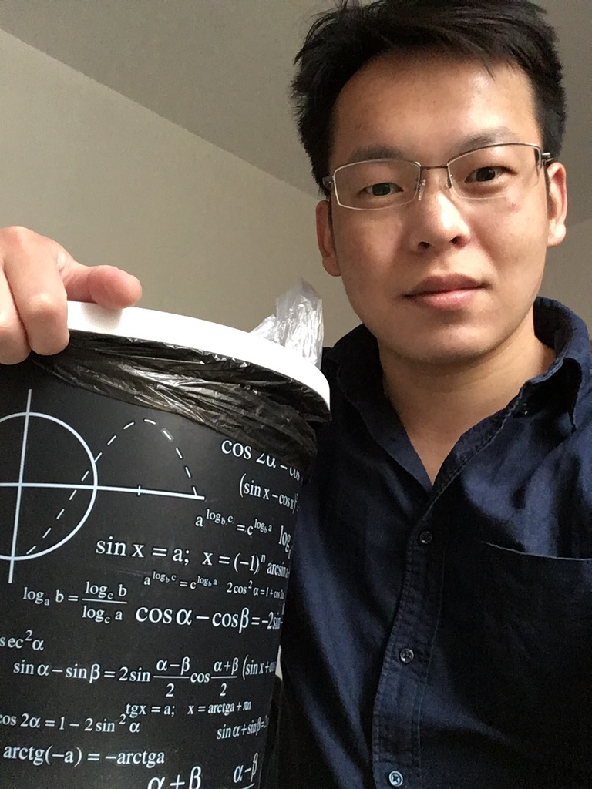

This is my personal website, and the following are some of my favoriate pictures. Obviously, not all of them are my photo.
I did my PhD study from 2019 to 2022 in University of Warsaw under the supervision of Piotr Sułkowski. I initiated research skills from 2016 to 2019 in UESTC by collaborating with Sung-Soo Kim. Now I am a postdoc in Fudan University in the group of Satoshi Nawata.
My email is mirror2718@gmail.com
For seeing my publications, please visit inspirehep through the link.
Recently, I am mainly focusing on physical and geometric aspects of 3d N=2 susy gauge theories.
This paper studies the dualities of abelian theories. We proposed a new quiver diagram --- plumbing graphs with matter nodes. We notice that the bifundamental matter is a bit subtle. After a few weeks of trying to break the barrier of understanding and to derive superpotential triangles, everything is smoothly and quickly done. The brane web is also a bit subtle. After this work, I can clearly see that there should be a closed relation between 3d theories and operations on three-manifolds.
19-Jun-2023, 三维超对称场论的混合陈-⻄蒙斯耦合参数 (幻灯片)，复旦博后中期汇报, 上海
07-04-2023, 3d N=2 theories and plumbing graphs: matter, gauging and dualities (Video, Slides), Joint HEP-TH Seminar, China
13-07-2022, Plumbing graphs with matter (Slides), parallel sections, String Math 2022, Warsaw, Poland
27-08-2021, 3d N=2 brane webs and quivers, Quiver meetings, Imperial College London, UK
28-04-2021, 3d N = 2 mirror symmetry and mixed Chern-Simons levels, IAS, Soochow University, China
20-04-2021, Mixed Chern-Simons levels and strip geometry for abelian 3d N=2 theories (Slides), String theory journal club, University of Warsaw, Poland
20-12-2019, Refined geometric transition and branes (Slides), Stringtheory.pl/2019, Kraków, Poland
05-11-2019, From JT gravity to a matrix model, String theory journal club, University of Warsaw, Poland
Basics on geometric topology, to appear
I wrote a Notebook for refined topological vertex, which is accessible at here.
A NSFC Youth scientific grant, 带有混合陈-西蒙斯耦合参数的三维超对称规范场论的紧致化构造及对偶性研究 (01/2024 -12/2024)
My wife's work on some funny stuffs.
My father's work on braids and knots (not the scientific ones).